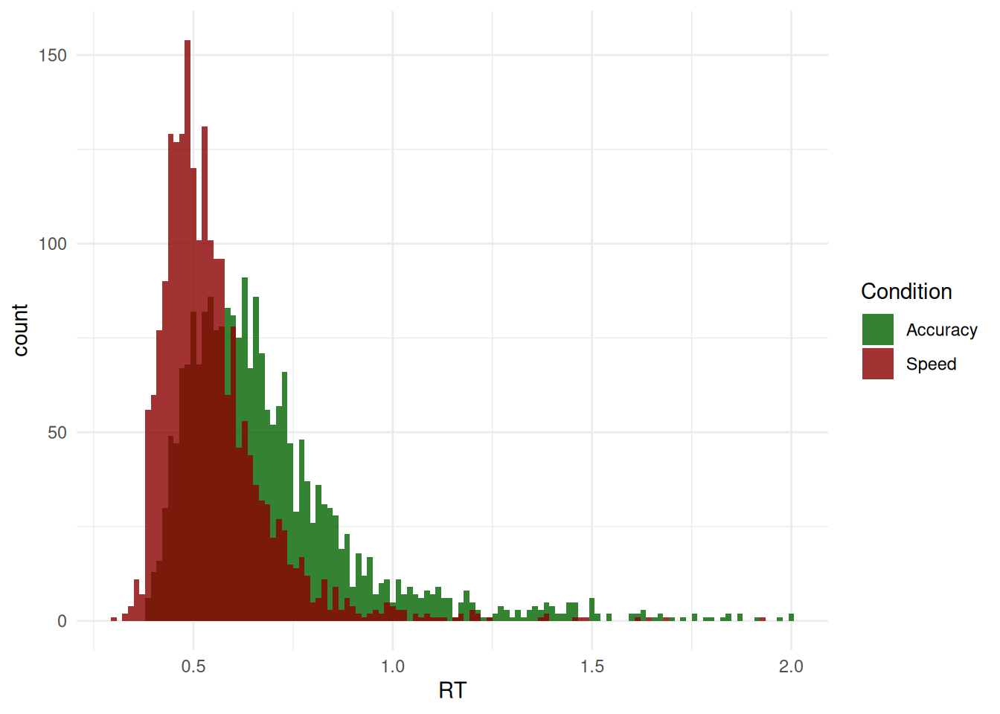

The Data
For this chapter, we will be using the data from Wagenmakers et al., (2008) - Experiment 1 also reanalyzed by Heathcote & Love (2012), that contains responses and response times for several participants in two conditions (where instructions emphasized either speed or accuracy). Using the same procedure as the authors, we excluded all trials with uninterpretable response time, i.e., responses that are too fast (<200 ms instead of <180 ms) or too slow (>2 sec instead of >3 sec).
set.seed(123) # For reproducibility
df <- read.csv("https://raw.githubusercontent.com/DominiqueMakowski/CognitiveModels/main/data/wagenmakers2008.csv")
df <- df[df$RT > 0.2 & df$Participant %in% c(1, 2, 3), ]
# Show 10 first rows
head(df, 10)
#> Participant Condition RT Error Frequency
#> 1 1 Speed 0.700 FALSE Low
#> 2 1 Speed 0.392 TRUE Very Low
#> 3 1 Speed 0.460 FALSE Very Low
#> 4 1 Speed 0.455 FALSE Very Low
#> 5 1 Speed 0.505 TRUE Low
#> 6 1 Speed 0.773 FALSE High
#> 7 1 Speed 0.390 FALSE High
#> 8 1 Speed 0.587 TRUE Low
#> 9 1 Speed 0.603 FALSE Low
#> 10 1 Speed 0.435 FALSE HighWe are going to first take interest in the response times (RT) of Correct answers only (as we can assume that errors are underpinned by a different generative process).
df <- df[df$Error == 0, ]
df <- df[df$Condition == "Accuracy", ]
ggplot(df, aes(x = RT)) +
geom_histogram(bins = 120, alpha = 0.8, position = "identity") +
theme_minimal()
Models
- Normal
- ExGaussian
- Shifted LogNormal
- Inverse Gaussian (Shifted Wald)
- Weibull
- LogWeibull (Shifted Gumbel)
- Inverse Weibull (Shifted Fréchet)
- Gamma
- Inverse Gamma
Code
f <- bf(
RT ~ 1,
sigma ~ 1,
beta ~ 1,
family = exgaussian()
)
m_exgauss <- brm(f,
data = df,
family = exgaussian(),
init = 0,
chains = 4, iter = 500, backend = "cmdstanr"
)
m_exgauss <- brms::add_criterion(m_exgauss, "loo")
saveRDS(m_exgauss, file = "models/m_exgauss.rds")Code
f <- bf(
RT ~ 1,
sigma ~ 1,
tau ~ 1,
minrt = min(df$RT),
family = rt_lognormal()
)
priors <- brms::set_prior("normal(0, 1)", class = "Intercept", dpar = "tau") |>
brms::validate_prior(f, data = df)
m_lognormal <- brm(
f,
prior = priors,
data = df,
stanvars = rt_lognormal_stanvars(),
init = 0,
chains = 4, iter = 500, backend = "cmdstanr"
)
m_lognormal <- brms::add_criterion(m_lognormal, "loo")
saveRDS(m_lognormal, file = "models/m_lognormal.rds")Code
f <- bf(
RT ~ 1,
bs ~ 1,
tau ~ 1,
minrt = min(df$RT),
family = rt_invgaussian()
)
priors <- brms::set_prior("normal(0, 1)", class = "Intercept", dpar = "tau") |>
brms::validate_prior(f, data = df)
m_wald <- brm(
f,
prior = priors,
data = df,
stanvars = rt_invgaussian_stanvars(),
init = 0,
chains = 4, iter = 500, backend = "cmdstanr"
)
m_wald <- brms::add_criterion(m_wald, "loo")
saveRDS(m_wald, file = "models/m_wald.rds")Code
f <- bf(
RT ~ 1,
sigma ~ 1,
tau ~ 1,
minrt = min(df$RT),
family = rt_weibull()
)
priors <- brms::set_prior("normal(0, 1)", class = "Intercept", dpar = "tau") |>
brms::validate_prior(f, data = df)
m_weibull <- brm(
f,
prior = priors,
data = df,
stanvars = rt_weibull_stanvars(),
init = 0,
chains = 4, iter = 500, backend = "cmdstanr"
)
m_weibull <- brms::add_criterion(m_weibull, "loo")
saveRDS(m_weibull, file = "models/m_weibull.rds")Code
f <- bf(
RT ~ 1,
sigma ~ 1,
tau ~ 1,
minrt = min(df$RT),
family = rt_logweibull()
)
priors <- brms::set_prior("normal(0, 1)", class = "Intercept", dpar = "tau") |>
brms::validate_prior(f, data = df)
m_logweibull <- brm(
f,
prior = priors,
data = df,
stanvars = rt_logweibull_stanvars(),
init = 0,
chains = 4, iter = 500, backend = "cmdstanr"
)
m_logweibull <- brms::add_criterion(m_logweibull, "loo")
saveRDS(m_logweibull, file = "models/m_logweibull.rds")Code
f <- bf(
RT ~ 1,
sigma ~ 1,
tau ~ 1,
minrt = min(df$RT),
family = rt_invweibull()
)
priors <- brms::set_prior("normal(0, 1)", class = "Intercept", dpar = "tau") |>
brms::validate_prior(f, data = df)
m_invweibull <- brm(
f,
prior = priors,
data = df,
stanvars = rt_invweibull_stanvars(),
init = 0,
chains = 4, iter = 500, backend = "cmdstanr"
)
m_invweibull <- brms::add_criterion(m_invweibull, "loo")
saveRDS(m_invweibull, file = "models/m_invweibull.rds")Code
f <- bf(
RT ~ 1,
sigma ~ 1,
tau ~ 1,
minrt = min(df$RT),
family = rt_gamma()
)
priors <- brms::set_prior("normal(0, 1)", class = "Intercept", dpar = "tau") |>
brms::validate_prior(f, data = df)
m_gamma <- brm(
f,
prior = priors,
data = df,
stanvars = rt_gamma_stanvars(),
init = 0,
chains = 4, iter = 500, backend = "cmdstanr"
)
m_gamma <- brms::add_criterion(m_gamma, "loo")
saveRDS(m_gamma, file = "models/m_gamma.rds")Code
f <- bf(
RT ~ 1,
sigma ~ 1,
tau ~ 1,
minrt = min(df$RT),
family = rt_invgamma()
)
priors <- brms::set_prior("normal(0, 1)", class = "Intercept", dpar = "tau") |>
brms::validate_prior(f, data = df)
m_invgamma <- brm(
f,
prior = priors,
data = df,
stanvars = rt_invgamma_stanvars(),
init = 0,
chains = 4, iter = 500, backend = "cmdstanr"
)
m_invgamma <- brms::add_criterion(m_invgamma, "loo")
saveRDS(m_invgamma, file = "models/m_invgamma.rds")Model Comparison
We can compare these models together using the loo package, which shows that CHOCO provides a significantly better fit than the other models.
# loo::loo_compare(m_normal, m_exgauss, m_lognormal, m_wald,
# m_weibull, m_logweibull, m_invweibull,
# m_gamma, m_invgamma) |>
# parameters(include_ENP = TRUE)Code
# `iterations` controls the actual number of iterations used (e.g., for the point-estimate)
# and `keep_iterations` the number included.
pred <- rbind(
estimate_prediction(m_normal, keep_iterations = 100, iterations = 100) |>
reshape_iterations() |>
data_modify(Model = "Normal"),
estimate_prediction(m_exgauss, keep_iterations = 100, iterations = 100) |>
reshape_iterations() |>
data_modify(Model = "ExGaussian"),
estimate_prediction(m_lognormal, keep_iterations = 100, iterations = 100) |>
reshape_iterations() |>
data_modify(Model = "LogNormal"),
estimate_prediction(m_wald, keep_iterations = 100, iterations = 100) |>
reshape_iterations() |>
data_modify(Model = "InvGaussian"),
estimate_prediction(m_weibull, keep_iterations = 100, iterations = 100) |>
reshape_iterations() |>
data_modify(Model = "Weibull"),
estimate_prediction(m_logweibull, keep_iterations = 100, iterations = 100) |>
reshape_iterations() |>
data_modify(Model = "LogWeibull"),
estimate_prediction(m_invweibull, keep_iterations = 100, iterations = 100) |>
reshape_iterations() |>
data_modify(Model = "InvWeibull"),
estimate_prediction(m_gamma, keep_iterations = 100, iterations = 100) |>
reshape_iterations() |>
data_modify(Model = "Gamma"),
estimate_prediction(m_invgamma, keep_iterations = 100, iterations = 100) |>
reshape_iterations() |>
data_modify(Model = "InvGamma")
)
pred |>
ggplot(aes(x=iter_value)) +
geom_histogram(data = df, aes(x=RT, y = after_stat(density)),
fill = "black", bins=120) +
geom_line(aes(color=Model, group=iter_group), stat="density", alpha=0.3) +
theme_minimal() +
facet_wrap(~Model) +
coord_cartesian(xlim = c(0, 2)) +
see::scale_color_material_d(guide = "none")